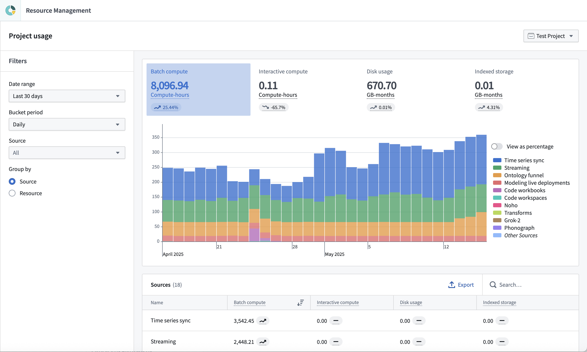

Project usage can be analyzed in the Project usage page.

This page is similar to the Analysis tab in the full Resource Management view. The main differences include:
Owner role on a project have access to the project usage page by default.Navigate to the project usage page by following the link at the bottom of the project navigation panel.